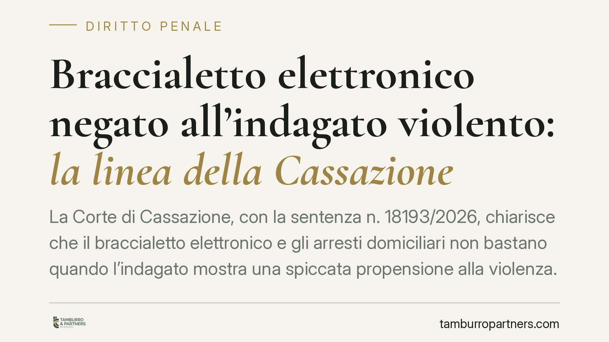

Braccialetto elettronico negato all'indagato violento: la linea della Cassazione
La Corte di Cassazione, con la sentenza n. 18193/2026, chiarisce che il braccialetto elettronico e gli arresti domiciliari non bastano quando l'indagato mostra una spiccata propensione alla violenza. In presenza di un concreto pericolo di reiterazione del reato, la misura adeguata resta la custodia in carcere. Una decisione che incide sulle strategie difensive nella fase cautelare.

Il caso
La Prima Sezione Penale della Cassazione è tornata sul rapporto tra pericolosità dell'indagato e scelta della misura cautelare. Il tribunale del riesame aveva confermato la custodia in carcere per un soggetto con un profilo di marcata aggressività. La difesa chiedeva la sostituzione con gli arresti domiciliari assistiti dal braccialetto elettronico, cioè il dispositivo di controllo a distanza previsto dall'art. 275-bis c.p.p.
La Suprema Corte ha respinto il ricorso. Il principio è netto: quando emerge una concreta e attuale propensione alla violenza, il braccialetto e i domiciliari non offrono garanzie sufficienti a contenere il pericolo. In questi casi il carcere non è una scelta afflittiva, ma la sola misura idonea allo scopo cautelare.
Inquadramento normativo
Il riferimento è l'art. 275 c.p.p., che disciplina i criteri di scelta delle misure cautelari. La norma impone due passaggi di ragionamento al giudice.
Il primo è il principio di adeguatezza: la misura deve essere proporzionata alla natura e al grado delle esigenze cautelari da soddisfare (art. 275, comma 1). Il secondo è il principio di minima offensività, o gradualità: la custodia in carcere può essere disposta soltanto quando ogni altra misura risulti inadeguata (art. 275, comma 3).
Qui si inserisce il braccialetto elettronico. L'art. 275-bis c.p.p. prevede che, nel disporre gli arresti domiciliari, il giudice possa imporre il controllo mediante mezzi elettronici. Ma il dispositivo non è una misura autonoma: è uno strumento accessorio ai domiciliari. Serve a rendere più stringente il controllo, non a trasformare in adeguata una misura che, per la pericolosità del soggetto, adeguata non è.
La Cassazione ricorda un limite tecnico spesso sottovalutato: il braccialetto segnala l'allontanamento dal luogo di detenzione, ma non impedisce fisicamente la commissione di nuovi reati. Verso una persona determinata a delinquere con violenza, l'avviso arriva quando il fatto è già in corso o compiuto.
Cosa cambia in concreto
Per chi affronta un procedimento penale nella fase cautelare, la pronuncia sposta l'attenzione dal tipo di misura richiesta alla valutazione della personalità dell'indagato.
Non basta offrire un domicilio idoneo e la disponibilità al braccialetto per ottenere la sostituzione del carcere. Il giudice guarda ai precedenti, alle modalità dei fatti contestati, ai comportamenti tenuti, agli elementi che rivelano una tendenza stabile alla condotta violenta. Se il quadro indica un concreto pericolo di reiterazione, la richiesta di attenuazione è destinata a trovare un ostacolo difficile da superare.
La decisione conferma anche la centralità della motivazione. Il giudice deve spiegare, in modo specifico, perché le misure meno afflittive risultino inadeguate. Un provvedimento che neghi i domiciliari con formule generiche resta censurabile. Al contrario, una motivazione ancorata a elementi concreti sulla pericolosità è solida in sede di legittimità.
Per la difesa, questo significa che il terreno del confronto è la ricostruzione fattuale della personalità, non solo l'aspetto formale della misura proposta.
Cosa fare in concreto
- Documentare ogni elemento che attenui il profilo di pericolosità: assenza di precedenti specifici, contesto familiare stabile, occasionalità della condotta.
- Contestare in modo puntuale la motivazione del provvedimento cautelare quando ricorre a formule di stile prive di riferimenti concreti.
- Non impostare la richiesta di sostituzione sul solo braccialetto: dimostrare che i domiciliari, in sé, sono adeguati alle esigenze del caso.
- Valutare con l'avvocato la tempistica dell'istanza, tenendo conto dell'evoluzione delle indagini e di eventuali sopravvenienze favorevoli.
- Considerare percorsi che incidano sulla prognosi di reiterazione, come programmi di sostegno o interventi documentabili.
Il punto
La sentenza n. 18193/2026 non introduce una regola nuova, ma ribadisce con chiarezza un equilibrio: la gradualità delle misure cautelari non è automatica. Cede di fronte a un pericolo concreto e attuale che nessuno strumento tecnico di controllo può neutralizzare. Il braccialetto elettronico resta una risorsa preziosa del sistema, ma non sostituisce la valutazione sulla persona.
---
*Contributo informativo a cura di Tamburro & Partners - Avv. Giuseppe Tamburro. Non costituisce parere legale.*
Ogni condominio ha una storia a sé.
Se gestisci un'amministrazione e vuoi un confronto su una specifica questione condominiale, scrivi allo studio. Ti rispondiamo entro un giorno lavorativo.